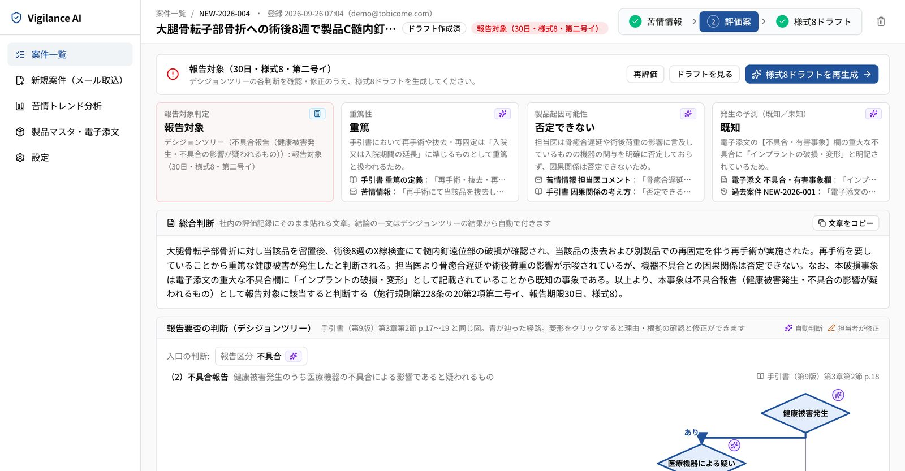

To Become, with Tobicome
Generative AI Conference TOKYO 2026 の Idea Pitch に登壇しました
現場の課題に
自ら踏み込む理由
社会や企業の中には、まだ十分に解かれていない課題があります。
医薬品・医療機器の安全管理に集中する属人的な負荷、生活や事業の質を損なう騒音、生成AIを導入しても動かない業務。
トビコメ株式会社は、“To become” に由来する名前の通り、変化の中へ飛び込み、課題を新しい価値へ変えていきます。
課題の外から語るのではなく、現場に入り、試し、磨き、実装する。
代表自身が外資ヘルスケアメーカーで市販後の安全管理を担ってきた経験を起点に、現場の痛みをプロダクトで解いていきます。
現場課題へのアプローチ
トビコメでは3つの現場課題の解決を目指して、
それぞれにプロダクトと支援を提供しています。
報告要否の判断と報告書作成が、
ベテランの経験に依存している
防音工事は高く、耳栓は不便。
既存の対策に決定的な解決策がない
生成AIの研修を受けても、
現場で動く施策にまで落ちない
事業内容
1.Vigilance AI ／ 医薬品・医療機器 安全管理支援
副作用・不具合情報のメール取込から、報告要否の評価案、様式ドラフト、トレンド分析までを一気通貫で支援。過去事例・電子添文・手引書を一元参照し、担当者が根拠を確認しながらその場で確定できます。最終評価は人が行い、AIに判断を任せきりにしません。

評価案画面（デモ環境・架空データ）
2.NulNoise ／ 後付け型ANCデバイス
交通音・工事音・近隣生活音などの外部騒音を、後付けの装置で打ち消すプロダクトです。工事不要で、賃貸でも導入できます。音響信号処理・ANC研究の専門家と共同研究を進め、静けさが価値になる空間への導入を目指しています。
3.生成AI業務改革 ／ 伴走支援・研修
業務課題のヒアリングと整理から、To-Be に向けた生成AI活用の検討、インパクト／フィージビリティによる優先度付け、施策の実行支援までを4ステップで進めます。企業ごとの課題に合わせた実践型研修も提供します。
事業の強み
表層で語らず、
深層まで潜る。3つの強み
私たちは医療機器の安全管理の現場で培った実務知と、プロダクトを自ら作って検証する実装力、そして「根拠を示し、最終判断は人に残す」設計思想をかけあわせ、現場で本当に使われる解決策を形にしてきました。
第三者からの評価
VC・インキュベーションプログラムからの評価をいただいています。
約100名のVC・エンジェル投資家の前で NulNoise をピッチし、最優秀賞を受賞。
DeNA を単独LPとするベンチャーキャピタル、デライト・ベンチャーズのプログラムに Vigilance AI（医薬品・医療機器の安全管理AI）で採択。
ANOBAKA 主催カンファレンスの Idea Pitch に、医薬品・医療機器向け安全管理 SaaS で登壇。
| 社名 | トビコメ株式会社（Tobicome, Inc.） |
|---|---|
| 所在地 | 〒104-0061 東京都中央区銀座1丁目12番4号 N&E BLD. 6F |
| 代表者 | 代表取締役 小原 成勝 |
| 設立 | 2026年2月16日 |
| 事業内容 | 医薬品・医療機器の安全管理業務支援システムの開発・提供／後付け型ANCデバイスの研究開発／生成AI活用による業務改革の伴走支援・研修 |
お問い合わせ
ご相談内容に応じて、下のフォームからご連絡ください。
Vigilance AI は、貴社の情報提供や契約手続きなしに、30分の模擬アウトプット確認から始められます。
フォームは Microsoft Forms を利用しています。ご入力いただいた個人情報の取扱いはプライバシーポリシーをご覧ください。